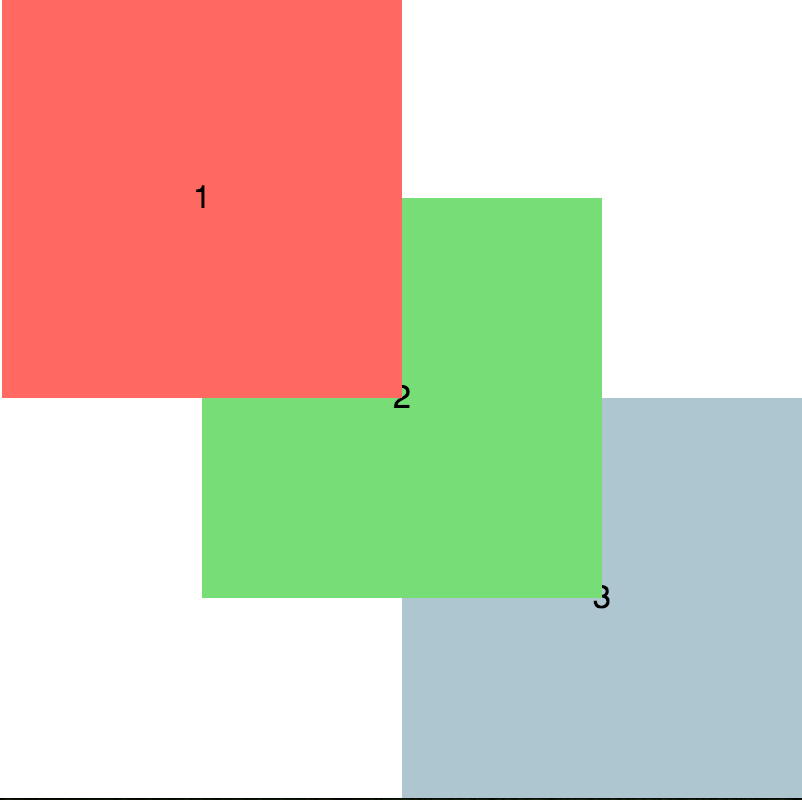

Cambiar el color del cuadrado verde a rojo al posicionar el mouse por encima.
Tratar de agregar un efecto de transición.
Ocultar el cuadrado rojo al posicionar el mouse por encima del cuadrado amarillo.
Redondear en 10px las puntas exteriores del primer y último cuadrado.
Dar estilo a los cuadrados para que queden ubicados como en la imagen.
